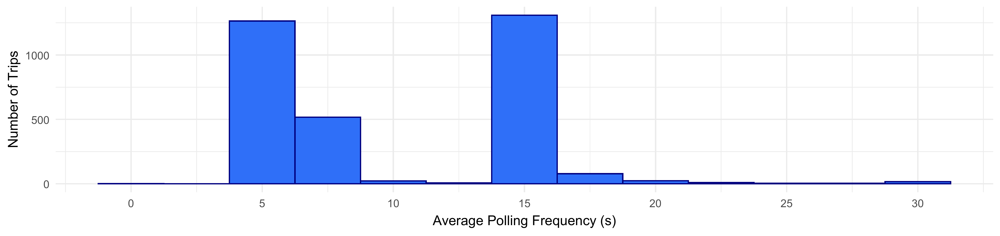
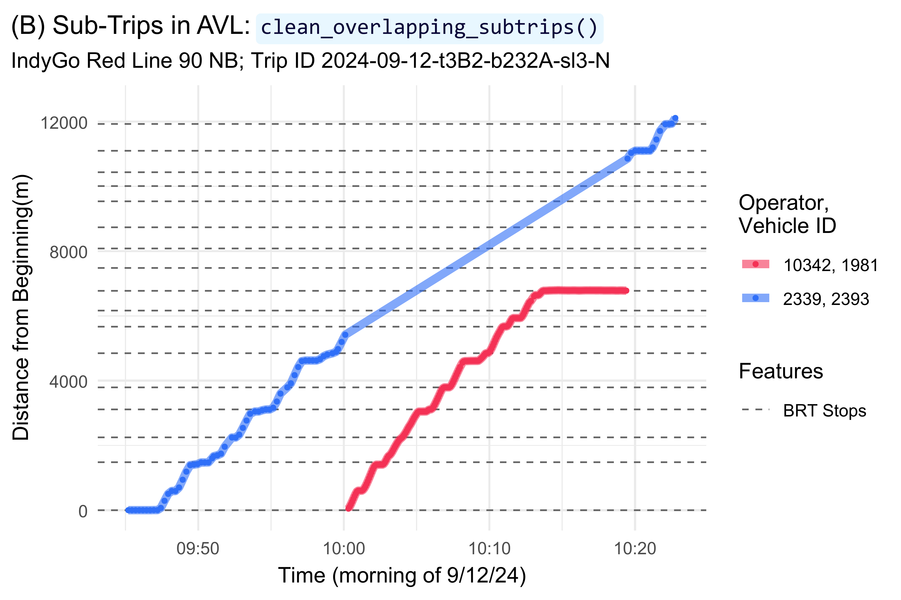
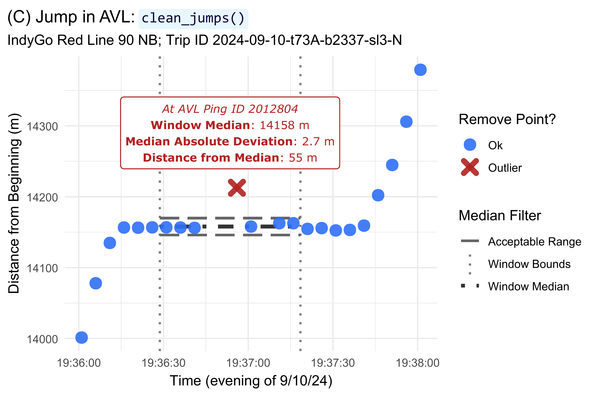
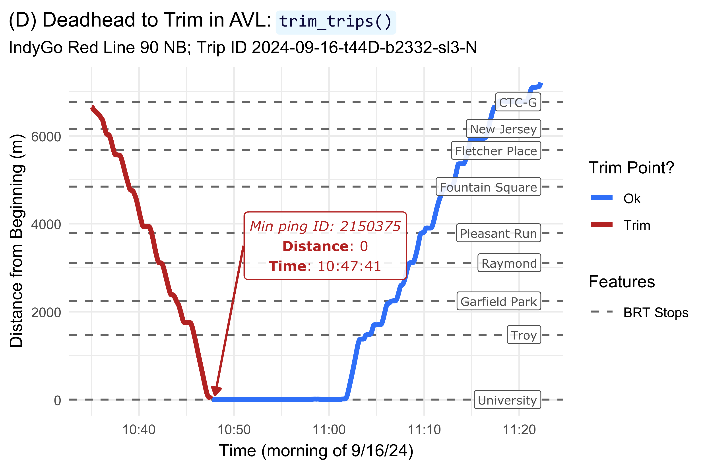
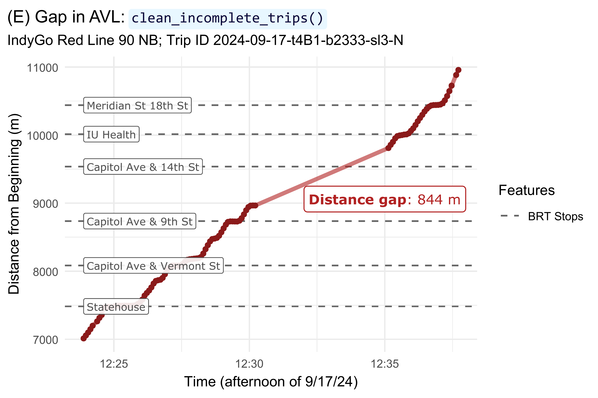
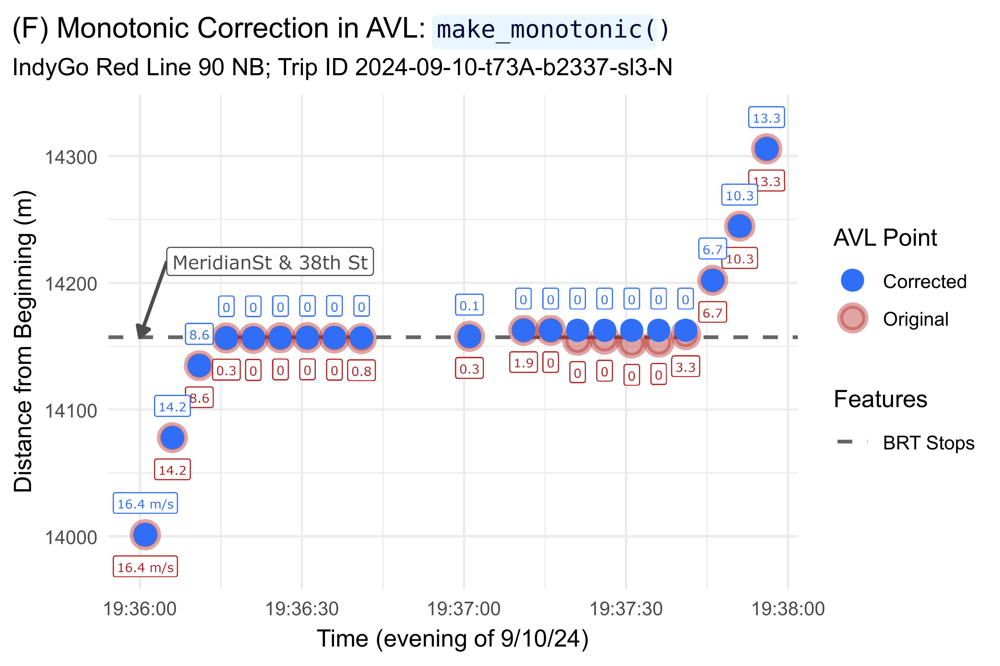
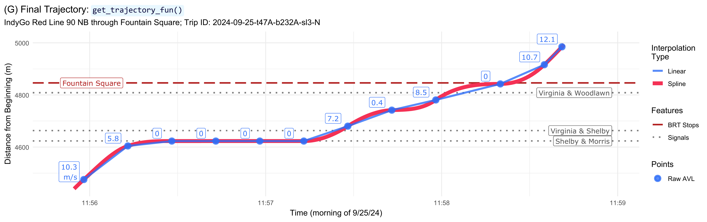

Introduction
This vignette contains all code use to clean and visualize the AVL data presented in our paper. This demonstrates the application of the workflow and provides a rough estimate of the package’s efficiency by tracking the computation time of each step. We ran this code on a typical consumer laptop (HP Spectre x360, with a 14-core 12th-gen Core i7-12700H and 16 GB of RAM).
This vignette is intended to complement our paper. Check out the full paper for a more thorough discussion of these cleaning steps.
Data
The data we used here was shared with us privately by IndyGo via their Swiftly API endpoint. As such, we unfortunately cannot share the raw data. We’ve pre-loaded the following IndyGo data into our RStudio workspace before running this vignette:
avl_df: The TIDES-compliantvehicle_locations.csvtable of historic AVL data. This includes all northbound Red Line (90N) trips made on weekdays in September and November 2024.route_geom: The Red Line’s northbound alignment, as retrieved from IndyGo’s GTFS viatransittraj::get_shape_geometry().
With this, we can load the packages we’ll need:
# For analysis
library(transittraj)
library(tidyverse)
# For plotting
library(marquee)
library(patchwork)Next, we’ll set some parameters for our visualizations:
# colors
my_r <- "#f43155"
my_b <- "#2f6ff8"
my_g <- "#00A884"
# marquee
code_style <- classic_style(code_font = "Consolas") %>%
modify_style(tag = "code",
background = "#e8f7ff",
color = "#0a0738"
)
marquee_label <- function(border = "firebrick") {
lab <- classic_style(
margin = trbl(0),
padding = trbl(4),
border = border,
border_width = trbl(1),
border_radius = 3,
align = "center"
)
return(lab)
}And we can set the parameters we’ll use for our data cleaning. Throughout the cleaning process, we’ll reference these names variables, rather than using numeric values.
# - Cleaning parameters -
indy_crs <- 32616 # WGS 84 UTM Zone 16N
route_buffer = 50 # meters
min_dist = 200 # meters
min_dur = 90 # seconds
dist_error = 0.001 # meters
max_d_gap = 800 # meters
hampel_t = 3
# - Benchmark parameters -
bench_iter <- 20We’ll begin by quickly exploring the average polling frequencies by each trip. Below we calculate the after polling frequency by trip, then plot a histogram of the trip-wide average frequencies.
# Get initial dims
n_obs <- dim(avl_df)[1]
n_trips <- length(unique(avl_df$trip_id_performed))
dur <- list()
# Polling
bin_width <- 2.5 # sec
bin_cap <- 30 # sec
polling <- avl_df %>%
group_by(trip_id_performed) %>%
summarize(t_0 = min(event_timestamp),
t_f = max(event_timestamp),
n_obs = n()) %>%
mutate(dur = as.numeric(difftime(t_f, t_0, units = "secs")),
avg_freq = dur / n_obs,
freq_capped = if_else(condition = avg_freq >= bin_cap,
true = bin_cap,
false = avg_freq))
# Plot polling frequencies
polling_hist <- ggplot(data = polling) +
geom_histogram(aes(x = freq_capped),
fill = my_b, color = "navy",
binwidth = bin_width) +
theme_minimal() +
scale_x_continuous(breaks = seq(from = 0, to = bin_cap, by = 5),
labels = seq(from = 0, to = bin_cap, by = 5)) +
labs(x = "Average Polling Frequency (s)",
y = "Number of Trips")
polling_hist
Proposed Workflow
The following sub-sections present each step of the proposed
workflow. These steps are more thoroughly described in our paper. To
evaluate the processing time required for each step, we wrap each
function in bench::mark() and pass additional parameters
relevant to the benchmark; some cleaner code, without the additional
benchmarking, is available on the package
website.
At each step, we also record the number of points and trips removed. Finally, we show the code used to generate each example visualization found in the paper, though because the figures have already been generated, we do not run these chunks when rendering the vignette. To see all un-rendered chunks, check out the raw vignette.
Steps 1 & 2: Buffer & Project onto Route
Steps 1 and 2 share the same function,
get_linear_distances(), as they both require spatial
analyses using the geos package under the hood. Step
1 clips AVL pings to a buffer around the route, and step 2
projects them onto the route. We’ll begin by running these steps:
# - Step 1 & 2: Buffer & Linearize -
steps12 <- bench::mark(
# transittraj
steps12 = get_linear_distances(avl_df = avl_df,
shape_geometry = route_geom,
clip_buffer = route_buffer,
project_crs = indy_crs),
# benchmark
time_unit = "s", check = TRUE, iterations = bench_iter, min_time = Inf
)
#> Warning: Some expressions had a GC in every iteration; so filtering is disabled.
distance_df <- steps12$result[[1]] %>% filter(distance < 20500)
dur[["1 & 2"]] <- steps12[,1:8]
# Save changes
n_obs <- append(n_obs,
dim(distance_df)[1])
n_trips <- append(n_trips,
length(unique(distance_df$trip_id_performed)))Step 3: Remove Overlapping Subtrips
Step 3 removes trips with overlapping “sub-trips” (distinct vehicle and operator ID values). First, run the step:
# - Step 3: Remove Overlap Subtrips -
step3 <- bench::mark(
# transittraj
step3 = clean_overlapping_subtrips(distance_df = distance_df,
check_operator = TRUE,
return_removals = FALSE),
# benchmark
time_unit = "s", check = TRUE, iterations = bench_iter, min_time = Inf
)
step3_df <- step3$result[[1]]
dur[["3"]] <- step3[,1:8]
# Save changes
n_obs <- append(n_obs,
dim(step3_df)[1])
n_trips <- append(n_trips,
length(unique(step3_df$trip_id_performed)))Next, plot our example:
plot_trip <- "2024-09-12-t3B2-b232A-sl3-N"
plot_df <- distance_df %>%
filter(trip_id_performed == plot_trip) %>%
mutate(subtrip_id = paste(trip_id_performed, operator_id, vehicle_id,
sep = "-"),
op_veh = paste(operator_id, vehicle_id, sep = ", "))
step3_plot <- ggplot(data = plot_df) +
geom_hline(data = stops,
aes(yintercept = distance, linetype = "BRT Stops"),
color = "grey40", linewidth = 0.4) +
geom_line(aes(x = event_timestamp, y = distance, color = op_veh),
linewidth = 2, alpha = 0.6) +
geom_point(aes(x = event_timestamp, y = distance, color = op_veh),
size = 0.8, alpha = 1) +
scale_color_manual(name = "Operator,\nVehicle ID",
values = c("10342, 1981" = "#f43155",
"2339, 2393" = "#2f6ff8")) +
scale_linetype_manual(name = "Features",
values = c("BRT Stops" = "dashed")) +
ylim(c(0, 12500)) +
xlim(c(as.POSIXct("2024-09-12 09:45:00", tz = "America/New_York"),
as.POSIXct("2024-09-12 10:23:00", tz = "America/New_York"))) +
theme_minimal() +
labs(x = "Time (morning of 9/12/24)",
y = "Distance from Beginning(m)",
title = "(B) Sub-Trips in AVL: `clean_overlapping_subtrips()`",
subtitle = paste("IndyGo Red Line 90 NB; Trip ID ", plot_trip,
sep = "")) +
theme(plot.title = element_marquee(style = code_style),
plot.title.position = "plot")
step3_plot
Step 4: Remove Outlying Jumps
Step 4 removes outlying jumps from the dataset using a Hampel filter. First, run the step:
# - Step 4: Remove jumps -
step4 <- bench::mark(
# transittraj
step4 = clean_jumps(distance_df = step3_df,
t_cutoff = hampel_t),
# benchmark
time_unit = "s", check = TRUE, iterations = bench_iter, min_time = Inf
)
#> Warning: Some expressions had a GC in every iteration; so filtering is disabled.
step4_df <- step4$result[[1]]
dur[["4"]] <- step4[,1:8]
# Save changes
n_obs <- append(n_obs,
dim(step4_df)[1])
n_trips <- append(n_trips,
length(unique(step4_df$trip_id_performed)))Next, plot our example:
outliers <- clean_jumps(distance_df = step3_df,
t_cutoff = hampel_t,
return_removals = TRUE)
plot_trip <- "2024-09-10-t73A-b2337-sl3-N"
plot_df <- step3_df %>%
filter(trip_id_performed == plot_trip) %>%
filter((distance >= 14000) & (distance <= 14380)) %>%
select(event_timestamp, distance, location_ping_id) %>%
mutate(point_ok = if_else(condition = (location_ping_id %in% outliers$location_ping_id),
true = "Outlier",
false = "Ok"))
window_bounds <- data.frame(x = c(as.POSIXct("2024-09-10 19:36:28.7", tz = "America/New_York"),
as.POSIXct("2024-09-10 19:37:18.5", tz = "America/New_York")),
med = c(14157.86, 14157.86)) %>%
mutate(upr = med + (hampel_t * 2.69 * 1.48),
lwr = med - (hampel_t * 2.69 * 1.48))
lab_df <- data.frame(y = 14290,
x = mean(window_bounds$x),
lab = paste("*At AVL Ping ID 2012804*",
"**Window Median**: 14158 m",
"**Median Absolute Deviation**: 2.7 m",
"**Distance from Median**: 55 m",
sep = " \n"))
step4_plot <- ggplot(data = plot_df) +
geom_vline(data = window_bounds,
aes(xintercept = x, linetype = "Window Bounds"),
color = "grey50", linewidth = 0.8) +
geom_line(data = window_bounds,
aes(x = x, y = med, linetype = "Window Median"),
color = "grey20", linewidth = 1.4) +
geom_line(data = window_bounds,
aes(x = x, y = lwr, linetype = "Acceptable Range"),
color = "grey40", linewidth = 1) +
geom_line(data = window_bounds,
aes(x = x, y = upr, linetype = "Acceptable Range"),
color = "grey40", linewidth = 1) +
geom_point(aes(x = event_timestamp, y = distance,
color = point_ok, shape = point_ok),
size = 2.5, stroke = 3, alpha = 0.9) +
scale_color_manual(name = "Remove Point?",
values = c("Outlier" = "firebrick",
"Ok" = "#2f6ff8")) +
scale_shape_manual(name = "Remove Point?",
values = c("Outlier" = 4,
"Ok" = 16)) +
scale_linetype_manual(name = "Median Filter",
values = c("Window Bounds" = "dotted",
"Window Median" = "dotdash",
"Acceptable Range" = "longdash")) +
geom_marquee(data = lab_df,
aes(x = x, y = y, label = lab),
color = "firebrick", size = 3, hjust = 0.5,
style = marquee_label("firebrick"), fill = "white", alpha = 1,
family = "Verdana") +
theme_minimal() +
labs(x = "Time (evening of 9/10/24)",
y = "Distance from Beginning (m)",
title = "(C) Jump in AVL: `clean_jumps()`",
subtitle = paste("IndyGo Red Line 90 NB; Trip ID ", plot_trip,
sep = "")) +
theme(plot.title = element_marquee(style = code_style),
plot.title.position = "plot")
step4_plot
Step 5: Trim Trip Tails
Step 5 trims deadheads from each trip. First, run the step:
# - Step 5: Clean insufficient trips -
step5 <- bench::mark(
# transittraj
step5 = trim_trips(distance_df = step4_df,
trim_type = "both"),
# benchmark
time_unit = "s", check = TRUE, iterations = bench_iter, min_time = Inf
)
step5_df <- step5$result[[1]]
dur[["5"]] <- step5[,1:8]
# Save changes
n_obs <- append(n_obs,
dim(step5_df)[1])
n_trips <- append(n_trips,
length(unique(step5_df$trip_id_performed)))Next, plot our example:
trimmed <- trim_trips(distance_df = step4_df,
trim_type = "both",
return_removals = TRUE)
plot_trip <- "2024-09-16-t44D-b2332-sl3-N"
plot_df5 <- step4_df %>%
filter(trip_id_performed == plot_trip) %>%
filter(distance < 7250) %>%
mutate(point_ok = if_else(condition = (location_ping_id %in% trimmed$location_ping_id),
true = "Trim",
false = "Ok"))
lab_df <- plot_df5 %>%
filter(point_ok == "Ok") %>%
filter(location_ping_id == first(location_ping_id)) %>%
select(location_ping_id, event_timestamp, distance) %>%
mutate(lab = paste("*Min ping ID: ", location_ping_id, "*",
" \n**Distance**: ", distance,
" \n**Time**: ", strftime(event_timestamp,
format = "%H:%M:%S",
tz = "America/New_York"),
sep = ""),
x1 = as.POSIXct("2024-09-16 10:51:00",
tz = "America/New_York"),
x2 = as.POSIXct("2024-09-16 10:48:00",
tz = "America/New_York"),
y1 = 3500,
y2 = distance + 100) %>%
select(-c(location_ping_id, event_timestamp, distance))
step5_plot <- ggplot(data = plot_df5) +
geom_hline(data = (stops %>% filter(distance <= 7250)),
aes(yintercept = distance, linetype = "BRT Stops"),
color = "grey40", linewidth = 0.6) +
geom_line(aes(x = event_timestamp, y = distance, color = point_ok),
linewidth = 1.5) +
scale_color_manual(name = "Trim Point?",
values = c("Trim" = "firebrick",
"Ok" = "#2f6ff8")) +
geom_label(data = (stops %>% filter((distance <= 7250))),
aes(x = max(plot_df5$event_timestamp), y = distance, label = stop_name),
hjust = "right", size = 2.7, color = "grey30", alpha = 0.9,
family = "Verdana") +
geom_marquee(data = lab_df,
aes(x = x1, y = y1, label = lab),
hjust = 0, color = "firebrick", size = 3.1, fill = "#FFFFFFE6",
family = "Verdana", style = marquee_label("firebrick")) +
geom_segment(data = lab_df,
aes(x = x1, xend = x2,
y = y1, yend = y2),
arrow = arrow(ends = "last", type = "closed",
length = unit(0.025, units = "npc")),
color = "firebrick", linetype = "solid", linewidth = 0.7) +
scale_linetype_manual(name = "Features",
values = c("BRT Stops" = "dashed")) +
theme_minimal() +
labs(title = "(D) Deadhead to Trim in AVL: `trim_trips()`",
subtitle = paste("IndyGo Red Line 90 NB; Trip ID ", plot_trip,
sep = ""),
x = "Time (morning of 9/16/24)",
y = "Distance from Beginning (m)") +
theme(plot.title = element_marquee(style = code_style),
plot.title.position = "plot")
step5_plot
Step 6: Remove Insufficient Trips
Step 6 removes trips with large gaps or that are too short. First, run the step:
# - Step 6: Trim trip tails -
step6 <- bench::mark(
# transittraj
step6 = clean_incomplete_trips(distance_df = step5_df,
min_trip_distance = min_dist,
min_trip_duration = min_dur,
max_distance_gap = max_d_gap),
# benchmark
time_unit = "s", check = TRUE, iterations = bench_iter, min_time = Inf
)
#> Warning: Some expressions had a GC in every iteration; so filtering is disabled.
step6_df <- step6$result[[1]]
dur[["6"]] <- step6[,1:8]
# Save changes
n_obs <- append(n_obs,
dim(step6_df)[1])
n_trips <- append(n_trips,
length(unique(step6_df$trip_id_performed)))Next, plot our example:
plot_trip <- "2024-09-17-t4B1-b2333-sl3-N"
plot_df6 <- step5_df %>%
filter(trip_id_performed == plot_trip) %>%
filter((distance >= 7000) & (distance <= 11000))
lab_df <- data.frame(lab = "**Distance gap**: 844 m",
y = 9060,
x = as.POSIXct("2024-09-17 12:32:00", tz = "America/New_York"))
step6_plot <- ggplot(data = plot_df6) +
geom_hline(data = (stops %>% filter((distance >= 7000) & (distance <= 11000))),
aes(yintercept = distance, linetype = "BRT Stops"),
color = "grey40", linewidth = 0.6) +
geom_line(aes(x = event_timestamp, y = distance),
linewidth = 1.5, color = "firebrick", alpha = 0.6) +
geom_point(aes(x = event_timestamp, y = distance),
size = 1.5, color = "firebrick4") +
geom_label(data = (stops %>% filter((distance >= 7000) & (distance <= 11000))),
aes(x = plot_df6$event_timestamp[1], y = distance, label = stop_name),
hjust = "left", nudge_y = 0, size = 2.8, color = "grey30", alpha = 0.9,
family = "Verdana") +
geom_marquee(data = lab_df,
aes(x = x, y = y, label = lab),
hjust = 0, color = "firebrick", size = 3.6, fill = "#FFFFFFE6",
family = "Verdana", style = marquee_label("firebrick")) +
scale_linetype_manual(name = "Features",
values = c("BRT Stops" = "dashed")) +
theme_minimal() +
labs(x = "Time (afternoon of 9/17/24)",
y = "Distance from Beginning (m)",
title = "(E) Gap in AVL: `clean_incomplete_trips()`",
subtitle = paste("IndyGo Red Line 90 NB; Trip ID ", plot_trip,
sep = "")) +
theme(plot.title = element_marquee(style = code_style),
plot.title.position = "plot")
step6_plot
Step 7: Correct Monotonicity
Step 7 corrects “back-drifting” points to be strictly monotonic, and corrects speeds to satisfy the Fritsch–Carlson constraints. First, run the step:
# - Step 7: Correct monotonicty -
step7 <- bench::mark(
# transittraj
step7 = make_monotonic(distance_df = step6_df,
correct_speed = TRUE,
add_distance_error = dist_error),
# benchmark
time_unit = "s", check = TRUE, iterations = bench_iter, min_time = Inf
)
#> Warning: Some expressions had a GC in every iteration; so filtering is disabled.
step7_df <- step7$result[[1]]
dur[["7"]] <- step7[,1:8]
# Save changes
n_obs <- append(n_obs,
dim(step7_df)[1])
n_trips <- append(n_trips,
length(unique(step7_df$trip_id_performed)))Next, plot our example:
plot_trip <- "2024-09-10-t73A-b2337-sl3-N"
plot_df1 <- step6_df %>%
filter(trip_id_performed == plot_trip) %>%
filter((distance >= 14000) & (distance <= 14320)) %>%
mutate(speed_lab = if_else(condition = (distance == min(distance)),
true = paste(round(speed, 1), " m/s", sep = ""),
false = paste(round(speed, 1))))
plot_df2 <- step7_df %>%
filter(trip_id_performed == plot_trip) %>%
filter((distance >= 14000) & (distance <= 14320)) %>%
mutate(speed_lab = if_else(condition = (distance == min(distance)),
true = paste(round(speed, 1), " m/s", sep = ""),
false = paste(round(speed, 1))))
step7_plot <- ggplot(data = plot_df1) +
geom_hline(data = (stops %>% filter((distance >= 14000) & (distance <= 14320))),
aes(yintercept = distance, linetype = "BRT Stops"),
color = "grey40", linewidth = 0.8) +
geom_point(aes(x = event_timestamp, y = distance,
color = "Original", fill = "Original"),
size = 4, stroke = 2, alpha = 0.4, shape = 21) +
geom_point(data = plot_df2,
aes(x = event_timestamp, y = distance,
color = "Corrected", fill = "Corrected"),
size = 2.3, stroke = 2, alpha = 1, shape = 21) +
geom_label(aes(x = event_timestamp, y = distance,
color = "Original", label = speed_lab),
nudge_y = -25, size = 2, alpha = 0.9, show.legend = FALSE,
family = "Verdana") +
geom_label(data = plot_df2,
aes(x = event_timestamp, y = distance,
color = "Corrected", label = speed_lab),
nudge_y = 25, size = 2, alpha = 0.9, show.legend = FALSE,
family = "Verdana") +
geom_segment(aes(x = as.POSIXct("2024-09-10 19:36:05",
tz = "America/New_York"),
xend = as.POSIXct("2024-09-10 19:36:00",
tz = "America/New_York"),
y = 14217, yend = 14157),
arrow = arrow(ends = "last", type = "closed",
length = unit(0.025, units = "npc")),
color = "grey30", linetype = "solid", linewidth = 0.7) +
geom_label(data = (stops %>% filter((distance >= 14000) & (distance <= 14320))),
aes(x = as.POSIXct("2024-09-10 19:36:05", tz = "America/New_York"),
y = 14157, label = stop_name),
color = "grey30", size = 3, alpha = 0.9, hjust = "left",
nudge_y = 60, family = "Verdana") +
scale_color_manual(name = "AVL Point",
values = c("Original" = "firebrick",
"Corrected" = "#2f6ff8")) +
scale_fill_manual(name = "AVL Point",
values = c("Original" = "firebrick",
"Corrected" = "#2f6ff8")) +
scale_linetype_manual(name = "Features",
values = c("BRT Stops" = "dashed")) +
theme_minimal() +
labs(x = "Time (evening of 9/10/24)",
y = "Distance from Beginning (m)",
title = "(F) Monotonic Correction in AVL: `make_monotonic()`",
subtitle = paste("IndyGo Red Line 90 NB; Trip ID ", plot_trip,
sep = "")) +
theme(plot.title = element_marquee(style = code_style),
plot.title.position = "plot")
step7_plot
Fit Interpolating Curve
Finally, we can fit our inteprolating curve to each trip. First, run the step:
# Run
fin <- bench::mark(
# transittraj
fin = get_trajectory_fun(distance_df = step7_df),
# benchmark
time_unit = "s", check = TRUE, iterations = bench_iter, min_time = Inf
)
#> Warning: Some expressions had a GC in every iteration; so filtering is disabled.
traj <- fin$result[[1]]
dur[["Final"]] <- fin[,1:8]
# Get info
n_obs <- append(n_obs, NA)
n_trips <- append(n_trips,
length(unclass(traj)))Next, plot our example:
plot_trip <- "2024-09-25-t47A-b232A-sl3-N"
plot_lims <- c(4440, 5000)
traj_df <- predict(object = traj,
trip = plot_trip,
distance_lims = plot_lims,
timestep = 1) %>%
rename(distance = interp) %>%
mutate(event_timestamp = as.POSIXct(event_timestamp, tz = "America/New_York"))
point_df <- distance_df %>%
filter(trip_id_performed == plot_trip) %>%
filter((distance >= plot_lims[1]) & (distance <= plot_lims[2])) %>%
mutate(speed_lab = if_else(condition = (distance == min(distance)),
true = paste(round(speed, 1), " m/s", sep = "\n"),
false = paste(round(speed, 1))))
traj_plot <- ggplot() +
geom_hline(data = (stops %>% filter((distance >= plot_lims[1]) & (distance <= plot_lims[2]))),
aes(yintercept = distance, linetype = "BRT Stops"),
color = "firebrick", linewidth = 0.9) +
geom_hline(data = (signals %>% filter((distance >= plot_lims[1]) & (distance <= plot_lims[2]))),
aes(yintercept = distance, linetype = "Signals"),
color = "grey50", linewidth = 0.9) +
geom_line(data = traj_df,
aes(x = event_timestamp, y = distance, color = "Spline"),
linewidth = 2, alpha = 1) +
geom_line(data = point_df,
aes(x = event_timestamp, y = distance, color = "Linear"),
linewidth = 1.2, alpha = 0.8) +
geom_point(data = point_df,
aes(x = event_timestamp, y = distance, shape = "Raw AVL"),
color = "#2f6ff8", fill = "#2f6ff8", size = 2, stroke = 2, alpha = 0.8) +
geom_label(data = point_df,
aes(x = event_timestamp, y = distance, label = speed_lab),
color = "#2f6ff8", size = 3.4, alpha = 0.8, nudge_y = 30, nudge_x = -5,
family = "Verdana") +
geom_label(data = (stops %>% filter((distance >= plot_lims[1]) & (distance <= plot_lims[2]))),
aes(x = as.POSIXct("2024-09-25 11:55:50", tz = "America/New_York"),
y = distance, label = stop_name),
color = "firebrick", size = 3.4, hjust = "left", alpha = 0.9,
family = "Verdana") +
geom_label(data = (signals %>% filter((distance >= plot_lims[1]) & (distance <= plot_lims[2]))),
aes(x = as.POSIXct("2024-09-25 11:58:58", tz = "America/New_York"),
y = distance, label = name),
color = "grey30", size = 3.3, hjust = "right", nudge_y = -0, alpha = 0.9,
family = "Verdana") +
scale_linetype_manual(name = "Features",
values = c("BRT Stops" = "longdash",
"Signals" = "dotted")) +
scale_shape_manual(name = "Points",
values = c("Raw AVL" = 21)) +
scale_color_manual(name = "Interpolation\nType",
values = c("Spline" = "#f43155",
"Linear" = "#2f6ff8")) +
theme_minimal() +
labs(x = "Time (morning of 9/25/24)",
y = "Distance from Beginning (m)",
title = "(G) Final Trajectory: `get_trajectory_fun()`",
subtitle = paste("IndyGo Red Line 90 NB through Fountain Square; Trip ID: ", plot_trip,
sep = "")) +
theme(plot.title = element_marquee(style = code_style),
plot.title.position = "plot")
traj_plot
Results
We now have our fit trajectory object, traj. We can see
what the object holds using its print() and
summary() methods:
print(traj)
#> [1] "AVL group trajectory with 3100 trips."
summary(traj)
#> ------
#> AVL Group Trajectory Object
#> ------
#> Number of trips: 3100
#> Total distance range: 0 to 20499.99
#> Total time range: 1730433602 to 1735707538
#> ------
#> Trajectory function present: TRUE
#> --> Trajectory interpolation method: monoH.FC
#> --> Maximum derivative: 3
#> --> Fit with speeds: TRUE
#> Inverse function present: TRUE
#> --> Inverse function tolerance: 0.01
#> ------We will demonstrate the plot() and
predict() methods for using trajectories in the vignette on
signal performance metrics.
With all steps complete, we can print our cleaning summary table:
dur_df <- bind_rows(dur, .id = "step")
cleaning_summ <- data.frame(step = c("Initial", "1 & 2", "3", "4",
"5", "6", "7", "Final"),
n_obs = n_obs,
n_trips = n_trips) %>%
left_join(y = (dur_df %>%
select(step, median)),
by = "step") %>%
mutate(delta_n = n_obs - lag(n_obs),
perc_n = delta_n / lag(n_obs) * 100,
delta_trips = n_trips - lag(n_trips),
perc_trips = delta_trips / lag(n_trips) * 100)
summ_clean <- cleaning_summ %>%
mutate(n_obs = format(n_obs, big.mark = ","),
n_trips = format(n_trips, big.mark = ","),
median = round(median, 1),
delta_n = format(delta_n, big.mark = ","),
perc_n = round(perc_n, 1),
delta_trips = format(delta_trips, big.mark = ","),
perc_trips = round(perc_trips, 1),
change_obs = paste(delta_n, " (", perc_n, "%)",
sep = ""),
change_trips = paste(delta_trips, " (", perc_trips, "%)",
sep = "")) %>%
select(-c(delta_n, perc_n, delta_trips, perc_trips)) %>%
rename(`Step` = step,
`Number of Observations` = n_obs,
`Change in Observations` = change_obs,
`Number of Trips` = n_trips,
`Change in Trips` = change_trips,
`Median Time (s)` = median)
knitr::kable(summ_clean)| Step | Number of Observations | Number of Trips | Median Time (s) | Change in Observations | Change in Trips |
|---|---|---|---|---|---|
| Initial | 1,707,095 | 3,256 | NA | NA (NA%) | NA (NA%) |
| 1 & 2 | 1,348,250 | 3,253 | 23.6 | -358,845 (-21%) | -3 (-0.1%) |
| 3 | 1,345,613 | 3,246 | 0.9 | -2,637 (-0.2%) | -7 (-0.2%) |
| 4 | 1,344,129 | 3,246 | 55.6 | -1,484 (-0.1%) | 0 (0%) |
| 5 | 1,335,074 | 3,241 | 0.4 | -9,055 (-0.7%) | -5 (-0.2%) |
| 6 | 1,304,499 | 3,100 | 1.1 | -30,575 (-2.3%) | -141 (-4.4%) |
| 7 | 1,304,499 | 3,100 | 73.3 | 0 (0%) | 0 (0%) |
| Final | NA | 3,100 | 36.5 | NA (NA%) | 0 (0%) |
The process removed roughly one-quarter of individual pings, with the largest impact from the route buffer. Roughly 5% of pings were removed, with the largest impact from removing insufficient trips. Your results will vary by your data and chosen tuning parameters.
Finally, the total time required by the cleaning process, in seconds, is:
The entire workflow, on a consumer laptop, took roughly 3 minutes. The steps which are recursive or require a sliding window – i.e., steps 4 and 6 – take the most time.